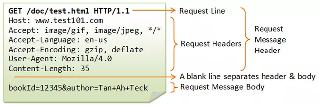
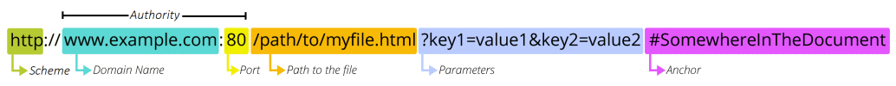

The internet and web are often used interchangeably but do not mean the same. The internet is the network of interconnecting computers where as the web is a specific part of that network. Particularly, the web are a series of computers always running and listening for requests for content. That content is (typically) web pages, but can also be files (like PDFs, JPG images or other documents), or services (like Esri's mapping services).
Everything on the web is accessed in one way: using Uniform Resource Locators, or as we commonly know them as URLs. The actual procedure to make a request for something on the web is called a Protocol, which the web's is called Hypertext Transfer Protocol, or HTTP for short. The protocol specification outlines how to make the request for a server and how to expect that server to reply.
Most websites and browsers always try to use HTTPS (the S is for Secure) to help protect the request and content returned. These secured requests differ from normal HTTP requests by scrambling the important parts of the request and the returned information, but otherwise works identically to an HTTP request.
You likely have seen a 404 error (look at these fun 404 errors). A "404" is a standard HTTP response code for a document not found and has become a meme. When a resource requested using HTTP cannot be found, an error page is returned telling you that it cannot be found (Http error 404). There are numerous other standard response codes for various conditions, including one for OK! (200).
Optional These codes aren't important to memorize, but understanding where to look them up and what they are communicating is important. The full list of codes can be read about here: https://developer.mozilla.org/en-US/docs/Web/HTTP/Status
All requests on the internet are made in plain text (think documents created in notepad on your computer). All servers are listening for requests on a single TCP port on that computer.
Think of a TCP port like the floor number in an apartment building, where a client (the person) enters the building and goes to a particular floor to ask questions of the person waiting there. A service is like a person waiting at that floor for questions. It is important to understand not all floors have someone waiting to ask questions and certain floors can even be "blocked".
The main types of requests are GET, POST and HEAD (source):
Requests are made in a particular order and format (like a form you would fill out) and sent to the server. Here is an example request:

The first word in the request is what you want to do: in this case to GET the document located at folder /doc/ named test.html and the format of the text format for the request is HTTP 1.1. After this there are many lines related to what the request is, how it should be sent back to the browser making the request (called request headers), and any URL parameters supplied in the request (last line). The whole request is supplied in URLs and header lines by the browser. The URLs themselves are clearly visible to you, the user (look at the top of most web browsers).
URLs are what we as a user provides to request something on the web. They are also used in web documents to refer to other web resources, like pictures on the page, documents that can be downloaded (PDFs, DOCX, or ZIP files), and anything else on the 'web'. So understanding how these are formed is critical to understanding the web.
Learn More URLs are the foundation of the web and important to understand.
https://developer.mozilla.org/en-US/docs/Learn/Common_questions/What_is_a_URL
A web browser is really two parts, an interpreter and a tool to perform requests. You, as a user, type a URL into the browser (or use a search engine to find) and "navigate" to a document containing some content you want to see. The interpreter part is about HTML and CSS, which we will learn later. The requests addresses are called URLs and have a few parts at their core:
| Part | Example | Description | Required |
|---|---|---|---|
| Scheme | HTTPS:// | The first part of a URL is the protocol (how to talk with the web server). For web traffic, the scheme will always be either HTTP (unsecured) or HTTPS (secured). Other schemes use similar formats to URLs (like FTP) but are beyond the scope of this discussion. | Yes |
| Domain | www.example.com | Domains have usually 3 parts, subdomain (www), domain name (example) and top level domain (.com). The domain name (example) is purchased and registered with the administrator of the top level domain (.com) and the owner of that domain can usually create any number of subdomains without further fees. | Yes |
| TCP Port | :443 | A web server can only bind with one port per protocol scheme. Most web servers listen for both HTTP (not-secured) and HTTPS (secured) requests, each taking one port. The default port for HTTP is 80 and for HTTPS is 443. Web browsers will automatically use the default port if not specified, which is why this required part is rarely seen. | Yes |
| Path and File | /path/to/filename.html | Any request to a web server can specify what file or resource you want to see, often entered as file name. If none are specified a server can try and find a default file on the server and return that. The default file is often named index.htm, index.html, or default.htm, but can be anything the administrator of the server wants. When a request to the server without this portion it is the server's job to look for the default and return that file. | No |
| Parameters | ?key1=value&key2=value | Some web pages act like programs where the request will have parameters (similar to programming variables). A ? (question mark) is placed to stop the file portion of the URL and begin the parameter section. Each parameter has a unique name and a value assigned to it that will be passed to the requesting page. The order of the parameters do not matter as long as it is always in the format NAME=VALUE. The value also must be encoded to not be confused with the URL structure (more on that later) and, when there are multiple parameters, each key=value pair is separated by an ampersand &. | No |
| Anchor | #anchorname | Rather than opening a web page at the top you can create page anchors to focus the browser's attention to that specific location. This is like jumping to a chapter in a book, but is on the one page. It is often used to jump to specific headings or titles on the page. | No |
The characters /?&#: are all used in the formation of a URL. What if a directory, file or parameter key or value were to use one of these special characters? The URL would become broken--when do you mean to literally use one of these characters, and when is it part of the URL itself? The solution is to encode the literal characters, sort of like putting quotes around a string to keep spaces.
Encoding in URLs is done by converting the characters to hexadecimal (nicknamed hex) codes. All characters on a computer are actually represented using numbers, 0 through 255 for the standard character set including all numbers, upper and lower case A through Z, and any punctuation. You can see a list of these numbers on the https://www.asciitable.com/.
HEX is just a different way to count, instead of being the decimal system (10-based, 0-9) it is a way to count using 16-base using numbers and the letters A through F.
Now in a URL when you want to use the ? character as a parameter value lets say, you need to encode it. Looking at the ASCII table the question mark character is represented by hexadecimal 3F. To tell the URL the next characters are to be literal and in HEX we use the character % to prefix it. Here is an example URL with this used to add a parameter value of Why?
https://www.example.com/filename.html?searchfor=Why%3FThe first ? question mark character denotes the change from filename to parameters, and the second one is encoded because the question mark character appearing again would confuse the web server. This is why no other characters are encoded, only the second question mark. All other special characters are part of the URL structure itself. Only when a character is meant literally does it need encoding.
While every character can be encoded (since they all have ASCII codes), URLs only encode special characters that may cause problems with the URL being properly interpreted. Some web servers are more strict and other's more relaxed--so how do you know what to do?. The best rule is to encode all non-standard characters. That is anything that is not A-Z (or a-z), and numbers (0-9 plus . (decimal)).
| Char | Encoded | Why must all literal uses be encoded? |
|---|---|---|
| / | %2F | The / character is used as a separator in the URL between scheme, domain and file paths. |
| : | %3A | Used in the start of the URL before the scheme (http://) |
| ? | %3F | Is the separator between the filename portion and parameters |
| & | %26 | A separator when multiple parameters are included |
| % | %25 | This character is the prefix for encoding, so must be itself encoded |
| # | %23 | The pound character is used as an anchor on the page for navigating from a URL |
These 6 characters can even have exceptions! It is confusing, and why for this course we say just encode all non-alpha numeric characters if in doubt.
URLs point to resources on the web. While we generally treat them like they are pointing at a web page, that web page itself needs to also point to files it wants to display (like images).
An absolute URL contains all the parts described in this document and by itself can be used to find a document. A relative path is used to point at assets to something that the absolute path is already known for and locate that item by combining the two. It is like you pointing at an object in the same room and saying "it is over there" rather than giving the full street address then describing how to go inside and locate that object in the room you currently are in
A URL that is relative needs an absolute URL to properly translate it to a full valid URL. There are a few key tools that allow you to build a URL that is relative. Below are the three most common related to how to move between directories:
| Task | Code | Description |
|---|---|---|
| Current folder | ./ | Look for the file in the same folder. Often this is not necessary and just the actual file specified |
| Back one level | ../ | This means go back one folder and look there. These can be chained together to tell it to go back two or more folders |
| Go back to root | / | A slash by itself means ignore the current path and start back at the beginning of the domain |
Remember, relative URLs require a referencing document to resolve. With the referencing document's absolute path the relative URL can be determined and object referenced properly loaded.